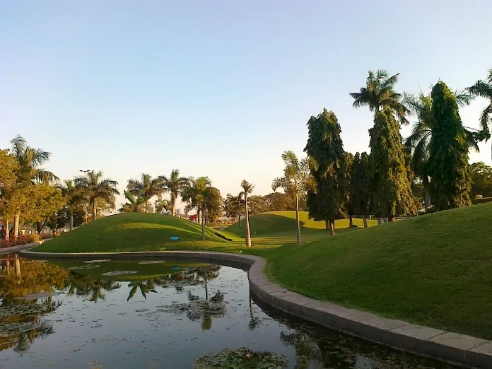
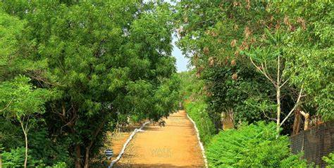

SANJEEVAIAH PARK

Sanjeevaiah Park is a public greenspace and park in the heart of Hyderabad, India.
Built on 92 acres (37 ha) along the banks of Hussain Sagar lake, the park is named after Damodaram Sanjivayya, an erstwhile Chief Minister of Andhra Pradesh.[2] The park is managed by the Hyderabad Metropolitan Development Authority.
[1] The park won the Best Open Landscape Award during the 2010 Indian National Trust for Art and Cultural Heritage award presentations.[3] The park also houses the second tallest Indian Flag.[4]

How to reach:

By Air
The nearest airport is in hyderabad

By Train
The nearest railways is in hyderabad

By Road
sanjeevaiah park, the most famous tourist destination in Hyderabad, can be used as a landmark. A bus,cab,local rickshaw can also be taken to reach the capital.